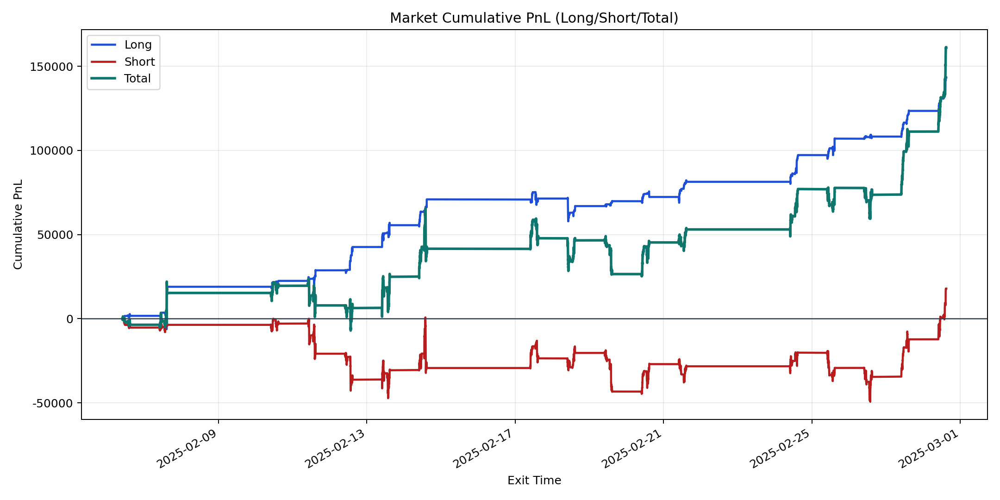
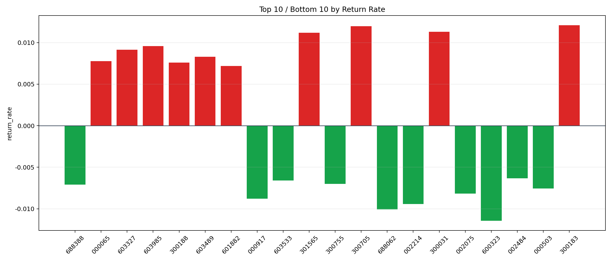

| repo_root | /home/haoranyou/data/output/alpha0.4_1w_5s_3ticks_index_filter/index_weights_1000 |
|---|---|
| period_months | 1 |
| period_label | 2025-02-06_to_2025-02-28 |
| start_time | 2025-02-06 09:50:22 |
| end_time | 2025-02-28 14:59:55 |
| n_trades | 43531 |
| n_symbols | 260 |
| total_pnl | 161154.03950000033 |
| long_total_pnl | 143341.90869999994 |
| short_total_pnl | 17812.130800000436 |
| total_entry_notional | 401995243.0 |
| long_entry_notional | 89700230.0 |
| short_entry_notional | 312295013.0 |
| total_return_rate | 0.0004008854390846618 |
| long_return_rate | 0.0015980104922807884 |
| short_return_rate | 5.7036231955456925e-05 |
| top_symbols_by_return | ["300183", "300705", "300031", "301565", "603985", "603327", "603489", "000065", "300188", "601882"] |
| bottom_symbols_by_return | ["600323", "688062", "002214", "000917", "002075", "000503", "688388", "300755", "603533", "002484"] |

